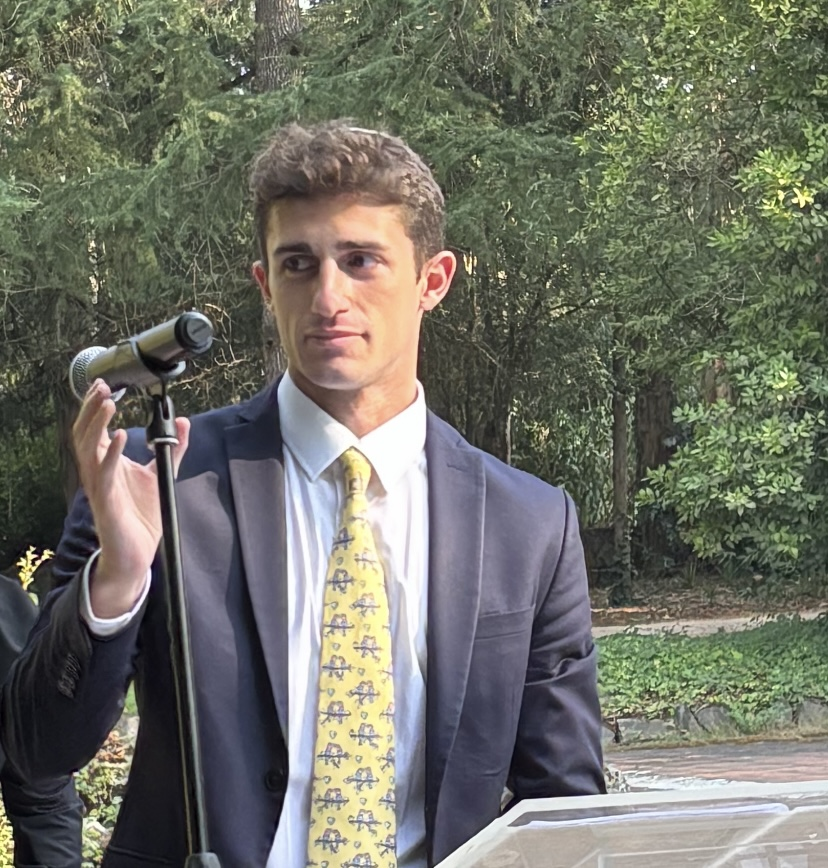

|
Jack Benarroch Jedlicki I'm a Computer Science PhD student at Harvard University working on embodied intelligence. Previously, I earned two bachelor's degrees in Mathematics and Physics at the University of Barcelona. During that time, I worked on computer vision and physics-informed neural networks at the Alaa Lab at UC Berkeley, on generative AI and topology at the Computer Vision Center, and on tensor networks for efficient physics simulations at the Barcelona Supercomputing Center. Before that, I also worked on sensing and imaging techniques at MIT's Auto-ID Lab. |
 |
{kind=link}
ResearchI'm interested in deep learning, computer vision, and robotics. |

|
Med-real2sim: Non-invasive medical digital twins using physics-informed self-supervised learning
Keying Kuang, Frances Dean, Jack B. Jedlicki, David Ouyang, Anthony Philippakis, David Sontag, Ahmed Alaa NeurIPS, 2024 Generation of digital twins of the cardiovascular system using computer vision and physics-informed neural networks. |
|
|
Metal particle detection methods and their use for freeze-dried vaccine inspection: A review
Jack B. Jedlicki, Denise Tellbach, Brian Subirana IEEE Sensors Journal, 2023 Sensing and imaging techniques for metal particle detection in freeze-dried vaccines. |